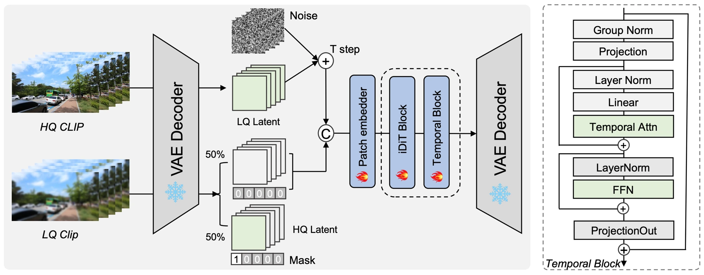
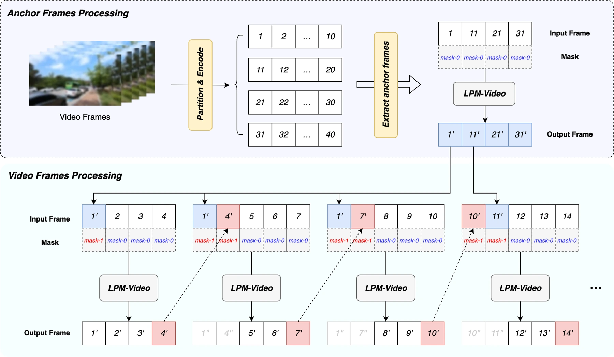

User-generated video carries every degradation at once — sensor noise, motion blur, compression blocking — and the mix differs from clip to clip. Applying an image restoration model frame by frame fixes each frame and quietly ruins the video: textures shimmer because nothing constrains neighbouring frames to agree.
用户生成的视频同时带有各种退化——传感器噪声、运动模糊、压缩块效应——而且不同片段的配比各不相同。逐帧套用图像恢复模型能修好每一帧，却会悄悄毁掉整段视频：纹理不停闪烁，因为没有任何东西约束相邻帧保持一致。
Moving to a video model removes the flicker and introduces two harder constraints. Cost scales with the number of frames, and a drift invisible over two seconds becomes obvious over two minutes. Arbitrary length is the requirement that breaks most designs.
换成视频模型消除了闪烁，却引入两个更难的约束。成本随帧数线性增长，而两秒内看不出的漂移在两分钟后会变得刺眼。任意长度正是让多数设计失效的那条要求。
LPM is a diffusion-based generative restoration framework built for exactly that setting and, as far as the authors know, the first generative video restoration model deployed at industrial scale. Restored videos now account for roughly 45% of Kuaishou’s total viewing time.
LPM 是专为这种场景构建的扩散式生成恢复框架，并且据作者所知，是第一个在工业规模上部署的生成式视频恢复模型。经其处理的视频目前约占快手总观看时长的 45%。
Training is staged: LPM-Image learns a spatial restoration prior, then LPM-Video adds temporal alignment and fusion — separating what detail should look like from how it should move.
训练是分阶段的：LPM-Image 先学习空间恢复先验，LPM-Video 再加入时间对齐与融合——把“细节长什么样”与“它该如何运动”分开处理。
Temporal-pyramid inference uses distant keyframes for long-range guidance and nearby anchor frames for local continuity, so quality does not depend on treating every clip window as an independent video.
时间金字塔推理用远端关键帧提供长程引导、用邻近锚帧保证局部连续，因此质量不依赖于把每个片段窗口当成独立的视频。
At comparable perceptual quality the production pipeline cuts bitrate by about 20% versus Kuaishou’s in-house codec — generative restoration paying for itself in bandwidth, not only in perceived quality.
在感知质量相当的前提下，生产流水线相比快手自研编码器降低约 20% 码率——生成式恢复不只提升观感，还能靠带宽把成本赚回来。
Appearance first, then time先学观感，再学时间
The training split is the central design decision. LPM-Image learns what a restored frame should look like — texture, edge structure, the statistics of plausible detail under heavy degradation. LPM-Video then learns alignment and fusion across frames, reusing the spatial prior instead of relearning it with a temporal dimension bolted on.
训练如何切分是核心的设计决策。LPM-Image 学习一张恢复后的帧应当长什么样——纹理、边缘结构、重退化下合理细节的统计规律；LPM-Video 随后学习跨帧的对齐与融合，复用空间先验，而不是把时间维度硬接上去重新学一遍。
Staging it this way is cheaper, and more importantly cleaner. Learning appearance and motion jointly entangles two failure modes that look similar in a loss curve — a hallucinated texture and a misaligned one — whereas the staged model can be diagnosed one level at a time.
分阶段这样做更便宜，更重要的是更干净。联合学习观感与运动会把两种失效模式纠缠在一起——幻觉纹理与错位纹理在损失曲线上看起来差不多——而分阶段模型可以逐层定位问题。
The architecture follows the same economy: a 2D VAE with a factorized 2D+1D diffusion transformer, so spatial and temporal attention are not priced identically. Full 3D attention over long clips is the obvious approach and the one that does not fit a serving budget.
架构遵循同样的经济性：2D VAE 配合分解式的 2D+1D 扩散 transformer，把空间注意力与时间注意力区别定价。对长片段做全 3D 注意力是最直觉的方案，也正是塞不进服务预算的那一类方案。


Keeping long videos coherent让长视频保持连贯
Arbitrary length is handled at inference rather than by training on longer clips. Temporal-pyramid inference gives two jobs to two kinds of reference: distant keyframes anchor overall appearance, while nearby restored frames act as local anchors for motion and texture continuity.
任意长度是在推理阶段解决的，而不是靠训练更长片段。时间金字塔推理把两种工作分给两类参考：远端关键帧锚定整体观感，邻近的已恢复帧则作为运动与纹理连续性的局部锚点。
The distinction matters because the failure modes live at different time scales. Without local anchors, consecutive frames disagree and detail flickers; without long-range guidance, a slow drift in colour or contrast accumulates until the end of the clip no longer matches the beginning.
这个区分很重要，因为两种失效模式处于不同的时间尺度。没有局部锚点，相邻帧会互相矛盾、细节闪烁；没有长程引导，颜色或对比度的缓慢漂移会不断累积，直到片尾与片头对不上。
Crucially, later windows are restored using information already restored, not independently. A pipeline that treats every fixed window as its own clip forces each window to re-invent a consistent appearance, which is both slower and less stable than inheriting one.
关键在于，后续窗口是借助已经恢复好的信息来恢复的，而不是各自独立处理。一个把每个固定窗口都当作独立片段的流水线，会迫使每个窗口重新发明一套一致的观感，这既更慢，也不如继承一套来得稳定。
What deployment measured部署中真正测到了什么
Evaluation runs at two levels, and the second is the unusual one. Offline comparisons assess restoration quality and temporal behaviour against other methods; production deployment measures viewing experience and bitrate inside Kuaishou’s own pipeline.
评测在两个层面展开，第二个层面并不常见。离线对比衡量恢复质量与时间行为；生产部署则在快手自有流水线内衡量观看体验与码率。
The offline numbers are the quality claim; the production numbers are the systems claim. At comparable perceptual quality the pipeline reduces bitrate by roughly 20% relative to the in-house codec, which the report translates into annual bandwidth savings on the order of hundreds of millions.
离线数字是质量论断，生产数字是系统论断。在感知质量相当的前提下，该流水线相对自研编码器降低约 20% 码率，报告将其折算为每年数亿元量级的带宽成本节省。
There is a reason a restoration model reduces bitrate. Cleaner high-frequency content and fewer hard-to-encode artifacts make the encoder’s job easier, so perceived quality and serving cost are not independent objectives here — improving one improved the other.
恢复模型能降码率是有原因的。更干净的高频内容与更少难以编码的伪影，让编码器的工作变轻松；因此在这里，感知质量与服务成本并非彼此独立的目标——改善其中一个，另一个随之改善。


Scale is a system property规模是一种系统属性
The result does not come from one architecture. Curated data, staged training, temporal inference and integration with the encoding pipeline are all load-bearing; a sharper single frame would not have produced the bitrate saving on its own.
这个结果并非来自某一个架构。精心构造的数据、分阶段的训练、时间维度的推理，以及与编码流水线的集成，都是承重的；单独把某一帧变得更锐利，并不能带来码率上的节省。
The 45% figure is also a statement about tolerance. At that volume the model runs on content distributions nobody curated, which is a stronger robustness claim than any benchmark average — a reminder that the test set that matters is production traffic.
45% 这个数字同时也是关于容忍度的论断。在这个体量上，模型跑在没有任何人精心挑选过的内容分布之上，这比任何基准平均分都更有力地说明了鲁棒性——它提醒我们，真正重要的测试集就是线上流量。
The numbers should stay tied to their context. Bitrate savings depend on the codec used as the baseline, the content mix and the quality criterion; a different platform with a different encoder would not necessarily reproduce 20%. What transfers is the argument that generative restoration can be cheap enough to be a default.
这些数字应当绑定其语境。码率节省取决于作为基线的编码器、内容构成与质量判据；换一个平台、换一个编码器，未必能复现那 20%。可以迁移的是那个论断：生成式恢复可以便宜到成为默认选项。
Paper & authors
LPM: Industrial-Scale Generative Video Restoration
Technical report 2026
Cite this work
@misc{zhu2026lpmindustrialscalegenerativevideo,
title = {LPM: Industrial-Scale Generative Video Restoration},
author = {Bichuan Zhu
and Fulin Li
and Jiachao Gong
and Jinhua Hao
and Kai Zhao
and Kun Yuan
and Pengcheng Xu
and Qiang Wang
and Qiao Mo
and Yanlong Yuan
and Yizhen Shao
and Yuxiao Hu
and Zixi Tuo
and Ming Sun
and Chao Zhou
and Bin Chen
and Bin Yu},
year = {2026},
eprint = {2607.13460},
archivePrefix = {arXiv},
primaryClass = {cs.CV},
url = {https://arxiv.org/abs/2607.13460}
}